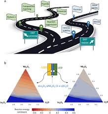

Chemistry is the branch of science that studies the composition, structure, properties, and reactions of matter, particularly at the atomic and molecular levels. It explores how different elements and compounds interact, form bonds, and undergo chemical reactions. Chemistry is often referred to as the central science because it connects and overlaps with various scientific disciplines, including biology, physics, medicine, and environmental science.
The study of chemistry involves understanding the behavior of atoms and molecules, which make up all matter. This includes learning about the periodic table, which organizes elements based on their properties and atomic structure. Chemical reactions are central to chemistry, as they explain how substances transform into new products. These reactions are governed by the principles of thermodynamics, kinetics, and equilibrium, which dictate the speed, direction, and extent of chemical changes.
Chemistry can be divided into several subfields, such as organic chemistry (which focuses on carbon-containing compounds), inorganic chemistry (which deals with metals, minerals, and non-carbon-based compounds), physical chemistry (which combines principles of physics with chemistry to understand the behavior of matter), and analytical chemistry (which involves techniques to detect and quantify substances).
The field of chemistry is fundamental to many industries, including pharmaceuticals, agriculture, energy, and environmental protection. It plays a crucial role in developing new materials, drugs, and technologies that improve human life and address global challenges. From the creation of life-saving medications to the development of sustainable energy solutions, chemistry is essential to advancements in science and technology.
extended reaction stoichiometry road map is a diagram which shows the steps needed to convert between units of reactant and unit of product in a reaction. ChemistrySolving Stoichiometric Problems
Road Map For Chemistry

Simply put, a roadmap is a strategic planning technique that places a project's goals and major deliverables (tasks, milestones) on a timeline, all grouped in a single visual representation or graphic.